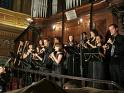

“CURSO DE NOIVOS”
A preparação dos casais para o Matrimônio é uma etapa próxima para a formação de autênticas famílias, tornando-se por isso mesmo uma missão prioritária da Igreja, na qual todos os fiéis envolvidos no trabalho devem cooperar com empenho e dedicação, segundo as suas próprias condições e vocações, objetivando alcançar os mais fecundos e melhores resultados.
Sendo a família a base da sociedade, ela é responsável pela existência do equilíbrio emocional, do bem-estar e progresso de seus membros e da humanidade em todos os tempos. Como consequência deste fato, cresce a necessidade imperiosa de haver cada vez mais famílias cristãs ajustadas e bem constituídas, para colaborar e ajudar a edificar um mundo mais humano e fraterno, onde seja cultivado com maior intensidade, o direito, a justiça e a caridade cristã.
Por outro lado, as famílias cristãs como “Igrejas Domésticas”, têm a tarefa insubstituível no anúncio e na vivência do Evangelho de Cristo, para que com a palavra e o exemplo cristão, venham atuar de maneira preponderante auxiliando a salvação eterna de seus membros e, por conseguinte, a salvação da humanidade.
Fundamentado nas orientações pastorais sobre o Matrimônio da CNBB e do Vaticano, nosso objetivo é oferecer alguns subsídios e algumas orientações práticas, adquiridas em mais de 15 anos de atuação paroquial (Curso de Noivos, Curso de Batismo, Pastoral da Família), para que elas iluminem a ação das Equipes em seu laborioso esforço de preparação dos novos casais.
